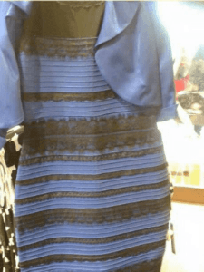

LEARNING- FREE OBJECT DETECTION AND LOCALIZATION
MOTIVATION
Predicting an object's pose is an important topic of robot vision, which has important value in automated warehouses.Current mainstream object detection and location approaches rely on neural networks, which may have the following problems:
[1] For each new scenario, a corresponding training data set needs to be established (Which could be expensive, especially for 6DOF pose labeling).
[2] When there is a change in the scene (Eg: the light becomes stronger), it is necessary to re-establish the data set and train a new neural network.
|  |
The dress is a photograph that became a viral internet sensation on 26 February 2015, when viewers disagreed over whether the dress pictured was coloured black and royal blue, or white and gold. [Wikipedia The Dress] |
I revisited the way neural networks recognize objects.
[1] Color information, provided by RGB images and label data.
[2] Pattern information, that is, the surface texture information of the object of interest.
There is no one-to-one correspondence between the RGB color information and the actual Hue of the object.
Human recognition of objects may also be through two steps, color and pattern. It is worth noting that
human do not directly use RGB information but use the brain to process RGB information.
Through further understanding, I found that the colors we usually talk about can be divided into hue, saturation, and luminance.
Interestingly, in different luminance situations, different hues may show the same RGB.
That is, the RGB information does not have a one-to-one correspondence with the original color of the object.
This has a major impact on neural networks. If we are in an environment where the light intensity is A,
collect data and train CNN. When the test environment light intensity B and A are very different, we can hardly expect CNN to have the same accuracy as in the past.
PROPOSED APPROACH
In order to solve the above-mentioned problems, we propose an object detection method based on RGB-D data and object 3D model.Our method first rendering different object poses in the scene, comparing the rendered synthesis point cloud with the collected observed point cloud, and selecting the most similar pose as the predict pose.
Unlike other learning-based approaches, it does not require a training process. For new scenes, we can scan the object through the RGB-D sensor to build new 3D model of the object under the new lighting condition.
For light-stable scenes (EG: warehouses), this type of method is quick and easy to implement.
SYSTEM ANALYSIS
Modeling and Analysis of Complex System | Advisor: Prof. Jitesh Panchal
Master Student, Design Engineering Lab at Purdue(DELP), ME Department, Purdue University
Solved the difficulty of service seekers when faced with a large number of service providers, also addressed the drawbacks of the First In First Out (FIFO) matching mechanism by developed a stable matching system based on utility theory to generate the preference lists of service providers and service seekers. The matching mechanism was accomplished based on different utility interests. Searched for the optimal matching frequency using the provided matching.
Thekinen J., Han Yupeng, and Panchal J. H., "Designing market thickness and optimal frequency of multi-period stable matching in CBDM", ASME International Design Engineering Technical Conferences Computers and Information in Engineering Conference 2018 [pdf]
INTERESTING IDEAS
2D and 3D Feature Fusion | Advisor: Prof. Cewu LU
Machine Vision and Intelligence Group, CS Department, SJTU
Aiming to use one neural network to detect multi-scale objects by applying different anchors to different categories
Built the pipeline of the fusion network, including extracting different features from point clouds and RGB images, transforming 2D information to 3D proposal boxes, cropped key points and their 3D features inside the proposal boxes, and concatenated 3D features with 2D features, and performed post-processing.
[Github]
Data-Aware Algorithm to Solve Discrete Integration | Advisor: Prof. Yexiang Xue
Machine Learning Group, CS Department, Purdue University
Inspired by “Taming the Curse of Dimensionality: Discrete Integration by Hashing and Optimization” and exploited a data-aware strategy to modify the original algorithm.
Generated an adaptive comparison strategy to reduce the expectation of computational complexity without loss of constant estimation guarantee and compared to the new algorithm with an imaginary “optimal” algorithm to provide a regret bound for the new algorithm.